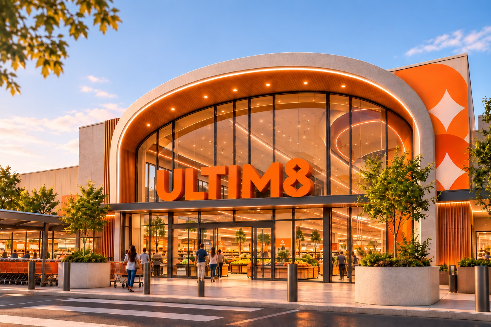
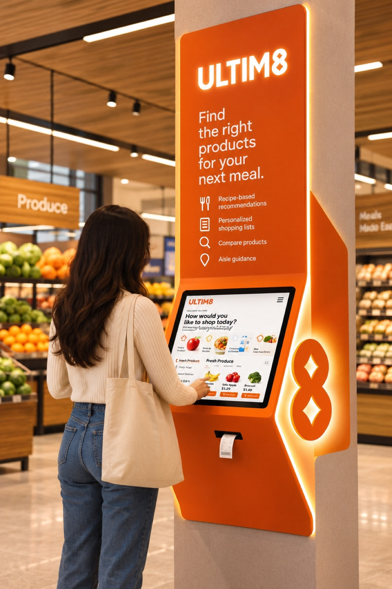
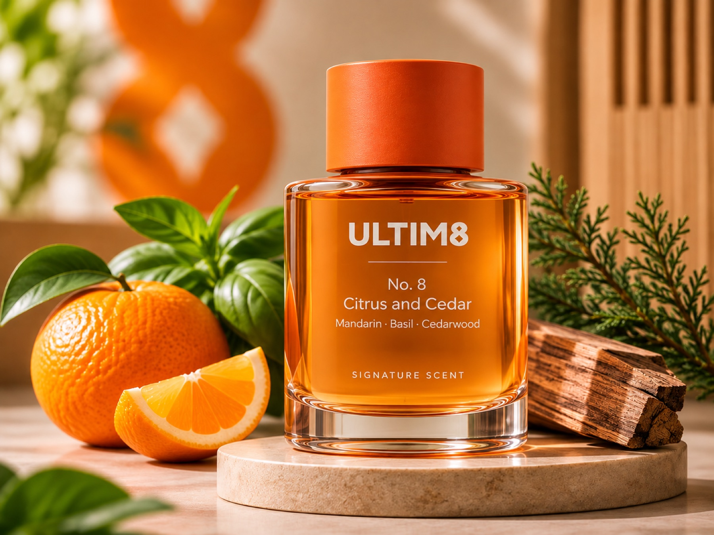
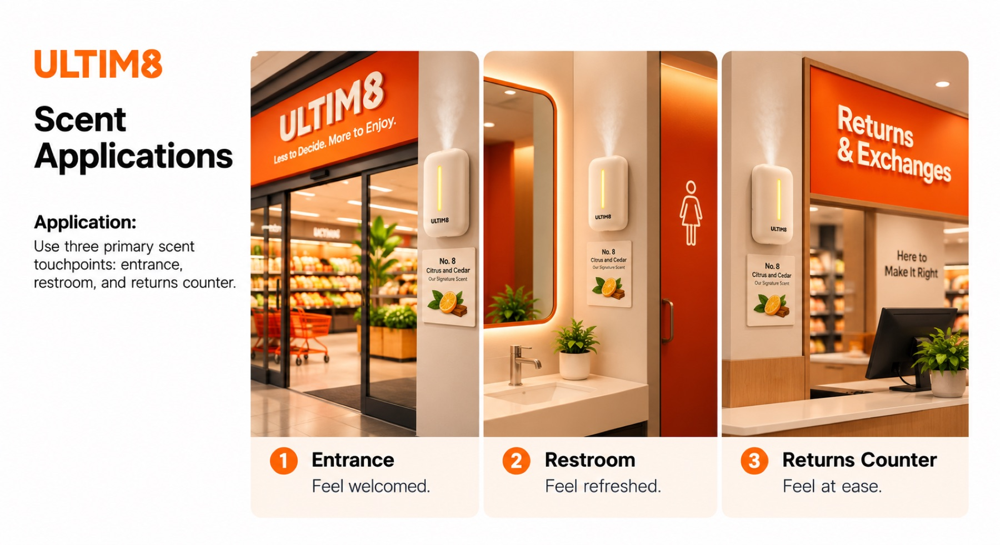
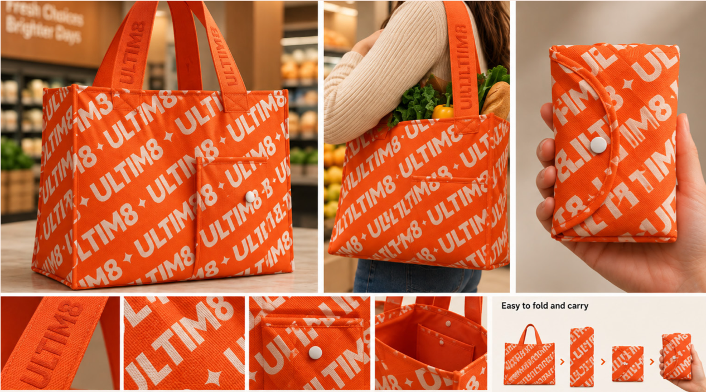
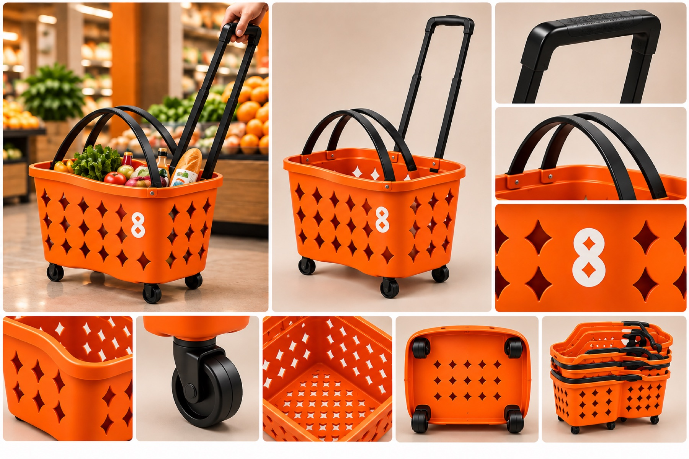
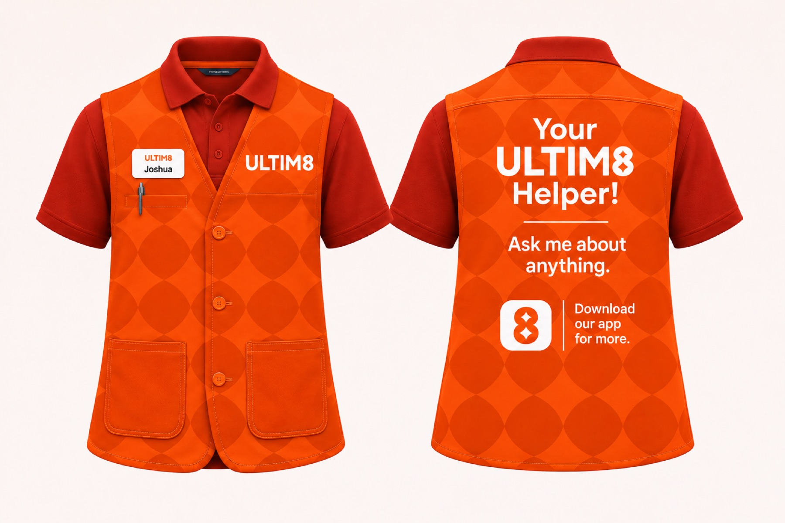
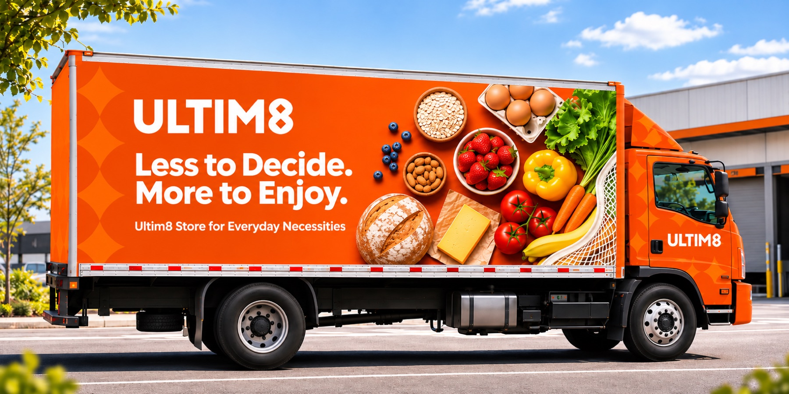
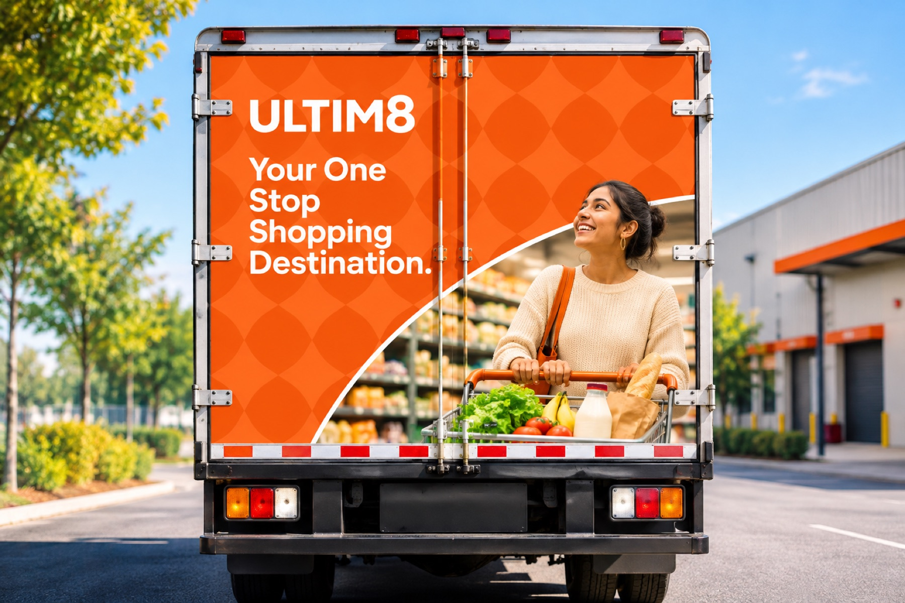

Experiential
Identity
Store Vision
Check-up
Our physical store brings ULTIM8’s brand identity to life, creating a welcoming environment where customers can experience and interact with our brand.
The modern supermarket exterior features a sculptural roof inspired by the number 8, extending our visual identity into the architecture. A large glass entrance creates a sense of openness and accessibility, while dimensional orange signage strengthens brand recognition and visibility.
The signage features three-dimensional illuminated lettering with warm metallic sides and translucent orange faces, adding depth and texture while ensuring a distinctive brand presence during both day and night.
Material Specifications


Digital
Shopping
Our interactive AI kiosk brings ULTIM8’s commitment to cognitive relief and confident decision-making into the physical store. Designed to simplify everyday shopping, it provides personalized assistance, product information, and intuitive navigation through a friendly, accessible digital experience.
The interface uses our signature orange-and-white palette, Pacaembu typography, clear iconography, and organized layouts to maintain brand consistency. Simple navigation, prominent actions, and minimal visual clutter help customers make informed choices with ease.
Physical & Digital Integration
Our kiosk connects digital assistance with the in-store shopping experience. Its integrated printer allows customers to take a personalized shopping list with them, making their journey from planning to purchasing seamless.

A working 1920 × 1080 landscape prototype. Every button leads to the next step of the shopping trip.
Multisensory
Discount
Scent
No. 8 Citrus & Cedar
Inspired by ULTIM8’s visual identity, the signature scent combines bright citrus notes reflecting the brand’s vibrant orange color with warm cedarwood notes inspired by the store’s natural wood interiors, creating a cohesive and welcoming sensory experience.
A welcoming scent could make the shopping environment feel more pleasant and less overwhelming.
Scent type:
Fresh citrus with light herbal, woody notes
Application:
Use three primary scent touchpoints: entrance, restroom, and returns counter.


Multisensory
Discount
Touch
Our grocery bags extend ULTIM8’s visual identity beyond the store, turning an everyday shopping essential into an opportunity for brand recognition. Featuring our signature orange color and repeating brand name pattern, the design creates a bold, recognizable, and consistent brand presence. The bags serve as functional packaging while reinforcing our friendly and approachable identity wherever our customers go.
1. Reusable Foldable Shopping Bag
Material & Construction
Fabric: Durable, lightweight recycled polypropylene (rPP) woven fabric with a textured finish, designed for repeated use.
Handles: Reinforced woven straps with a ULTIM8 logo embroidered in tonal orange on each handle.
Structure: Reinforced stitching along the handles, seams, and base for sturdiness and improved weight distribution.
Finish: Brand-orange fabric with an all-over white ULTIM8 pattern.
Closure: Integrated front pocket with a snap button, allowing the bag to fold into a compact pouch.
Application:
Tactile Experience: Textured fabric and embroidered handles create a distinctive, recognizable brand interaction.

Multisensory
Discount
Touch
2. Shopping Basket
A multifunctional shopping basket that combines the convenience of a handheld basket with the mobility of a trolley. Inspired by the ULTIM8 symbol, the basket incorporates a subtle figure-eight-shaped body, rounded contours, and signature diamond-shaped cutouts, translating the brand identity into a functional product.
Rolling Shopping basket
Symbol-Inspired Design: Figure-eight-shaped body with rounded contours and diamond cutouts inspired by the ULTIM8 symbol.
Material & Construction: Lightweight, durable, recyclable polypropylene plastic in signature orange with a reinforced base.
Ergonomic Comfort: Semi-circular black handles with textured, non-slip grips ensure comfortable handling.
Practicality & Convenience: Spacious interior, smooth rolling wheels, and nestable construction allow easy shopping and efficient storage.
Dual Functionality
Switch between handheld basket and wheeled trolley using the extendable pull handle to reduce physical effort.

Apparel
Collection
Employee Uniform
Our employee uniform is designed to make our team easily recognizable, approachable, and ready to help. The ULTIM8 orange vest features our signature brand pattern, logo, and employee name badge, paired with a deep orange polo shirt for a cohesive look.
The back features the message “Your ULTIM8 Helper!”, encouraging customers to ask for assistance. Our app icon and download prompt extend the shopping experience beyond the store. Together, these elements reinforce our commitment to friendly service, brand recognition, and a simpler shopping experience.
ULTIM8 Tasting Genie — Staff Uniform
Our Tasting Genie uniform is an extension of our main employee uniform, designed specifically for in-store product sampling and customer engagement. It carries forward our signature orange color, diamond pattern, and logo to maintain a consistent brand identity while introducing an apron and cap suited to the tasting experience.
The white ULTIM8 logo and “Tasting Genie” title clearly identify the employee’s role, while the tonal diamond pattern adds visual interest. A plain orange pocket with visible stitching provides practical storage without disrupting the design.
Together, these elements create a recognizable, functional, and welcoming uniform that encourages customers to discover new products and interact confidently with our team.

Store
Delivery
Our delivery trucks do more than transport fresh produce and everyday essentials. They extend our brand presence beyond the store, turning everyday deliveries into opportunities to build visibility, recognition, and trust within the community.
The truck design combines our signature orange, ULTIM8 logo, diamond pattern, and inviting grocery imagery to create a recognizable mobile brand experience. Our tagline, “Less to Decide. More to Enjoy.”, reinforces our promise of simpler, more enjoyable shopping.
By carrying our identity across neighborhoods and delivery routes, our trucks act as moving advertisements while supporting our daily operations. This helps us maintain a consistent brand experience, reach new customers, and make ULTIM8 a familiar part of everyday life.

